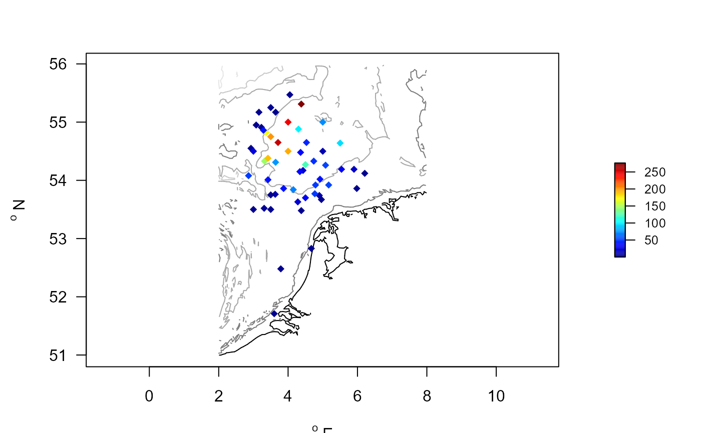
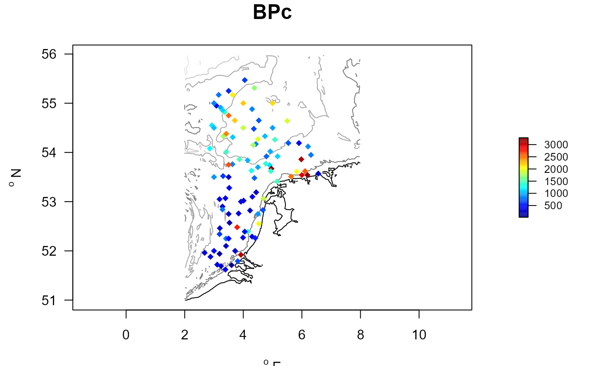

Functions for obtaining the bioturbation and bio-irrigation potential index.
getIndices.RdgetDbIndex estimates the BPc index sensu Querios et al., 2013 and Solan et al., 2004.
getIrrIndex estimates the IPc index sensu Wrede et al., 2018.
Usage
getDbIndex (descriptor, taxon, density, biomass, averageOver = NULL,
subset, trait = Traits_Db, taxonomy = NULL,
full.output = FALSE, verbose = FALSE)
getIrrIndex (descriptor, taxon, density, biomass, averageOver = NULL,
subset, trait = Traits_irr, taxonomy = NULL,
full.output = FALSE, verbose = FALSE)Arguments
- descriptor
name(s) of the descriptor, i.e. *where* the data were taken, e.g. station names. Either a vector, a list, a data.frame or matrix (and with multiple columns). It can be of type numerical, character, or a factor. When a data.frame or a list the "names" will be used in the output; when a vector, the argument name will be used in the output.
- taxon
vector describing *what* the data are; it gives the taxonomic name (e.g. species). Should be of the same length as (the number of rows of)
descriptor. Can be a list (or data.frame with one column), or a vector. When a data.frame or a list the "name" will be used in the output; when a vector, the argument name will be used.- density, biomass
vector or list that contains the *density* and *biomass* of the data. Should be of the same length as (the number of rows of)
descriptorandtaxon.- averageOver
vector with *replicates* over which averages need to be taken. Should be of the same length as (the number of rows of)
descriptor.- subset
logical expression indicating elements to keep from the density data: missing values are taken as FALSE. If NULL, or absent, then all elements are used. Note that the subset is taken *after* the number of samples to average per descriptor is calculated, so this will also work for selecting certain taxa that may not be present in all replicates over which should be averaged.
- trait
(taxon x trait) data, in *WIDE* format, and containing numerical values only. The first column should contain the name of the taxa. For function
getDbIndex, also the columns namedMiandRi, denoting the mobility and reworking mode (values between 1-4 and 1-5 respectively) should be present. For functiongetIrrIndex, the columns namedBT(burrowtype, 1-3),FT(feeding type, 1-3), andID(injection depth, 1-4) should be present. Good choices are Traits_Db and Traits_irr (the defaults).- verbose
when TRUE, will write warnings to the screen.
- full.output
when TRUE, will output the full data.frame with the descriptor x taxon indices (called
all. Seevalue.- taxonomy
taxonomic information (the relationships between the taxa), a data.frame; first column will be matched with
taxon, regardless of its name. This is used to estimate traits of taxa that are not accounted for, and that will be estimated based on taxa at the nearest taxonomic level. See details.
Details
The algorithm first calls function getDensity, to obtain the (depending on averageOver averaged) taxon densities and biomass per descriptor. The weight is estimated from biomass and density.
Then, for each taxon in the obtained dataset, the required traits are extracted from the trait database using function getTrait.
The two data.frames are then merged (based on taxon), so that for each descriptor x taxon occurrence, the density, weight and required traits.
The bioturbation or bioirrigation Index is then estimated by using the appropriate formula,
Finally, the sums of the taxon indices are taken per descriptor, and the averages are estimated for the taxa, using the R-function aggregate.
Value
Both return a list with the following elements:
descriptor a data.frame with two columns, the descriptor, and the index (BPc or IPc), which consist of the *summed* values over all taxa
taxon a data.frame with two columns, the taxon name, and the index (BPc or IPc), which is *averaged* over all descriptors
all, will only be present if
full.outputisTRUE: the full dataset on which the indices were estimated.
See also
MWTL for the data sets
mapBtrait for simple plotting functions
getDensity for functions working with density data
getTraitDensity for functions operating on density and trait data.
extendTrait for functions working with traits
References
Queiros, Ana M., Silvana N. R. Birchenough, Julie Bremner, Jasmin A. Godbold, Ruth E. Parker, Alicia Romero-Ramirez, Henning Reiss, Martin Solan, Paul J. Somerfield, Carl Van Colen, Gert Van Hoey, Stephen Widdicombe, 2013. A bioturbation classification of European marine infaunal invertebrates. Ecology and Evolution 3 (11), 3958-3985
Solan M, Cardinale BJ, Downing AL, Engelhardt KAM, Ruesink JL, Srivastava DS. 2004. Extinction and ecosystem function in the marine benthos. Science 306:1177-80.
A. Wrede, J.Beermann, J.Dannheim, L.Gutow, T.Brey, 2018. Organism functional traits and ecosystem supporting services - A novel approach to predict bioirrigation. Ecological indicators, 91, 737-743.
Note
Equations:
The formula for estimating the bioturbation Index for taxon i (as in Querios et al., 2013)is:
BPc_i = sqrt(Wi) * density_i * Ri*Mi,
where
MiandRi, denote the mobility and reworking mode (values between 1-4 and 1-5 respectively). See Traits_Db for what these numbers mean.The formula for estimating the bioirrigation Index for taxon i (as in Wrede et al., 2018) is:
IPc_i = (Wi)^(0.75) * density_i * BTi*FTi*IDi,
where
BTis burrowtype (1-3),FTis feeding type (1-3), andIDis injection depth (BF1-4). See Traits_irr for what these numbers mean.
The stations Index is the sum of all species indices.
Examples
##-----------------------------------------------------
## The bioturbation potential for one species
##-----------------------------------------------------
# Amphiura filiformis, for increasing density
DbAmp <- getDbIndex(
taxon = rep("Amphiura filiformis", times=10),
density = 1:10,
biomass = (1:10)*4.5e-3,
full.output=TRUE,
trait = Traits_Db)
head(DbAmp$all)
#> taxon descriptor density biomass Weight Ri Mi BPc
#> 1 Amphiura filiformis 1 1 0.0045 0.0045 4 3 0.8049845
#> 3 Amphiura filiformis 2 2 0.0090 0.0045 4 3 1.6099689
#> 4 Amphiura filiformis 3 3 0.0135 0.0045 4 3 2.4149534
#> 5 Amphiura filiformis 4 4 0.0180 0.0045 4 3 3.2199379
#> 6 Amphiura filiformis 5 5 0.0225 0.0045 4 3 4.0249224
#> 7 Amphiura filiformis 6 6 0.0270 0.0045 4 3 4.8299068
##-----------------------------------------------------
## The bioirrigation potential for one species
##-----------------------------------------------------
# Amphiura filiformis, in dutch part of the northsea
IrrAmp <- with (MWTL$density,
getIrrIndex(
descriptor = station,
taxon = taxon,
subset = taxon == "Amphiura filiformis",
averageOver = year,
density = density,
biomass = biomass,
full.output = TRUE,
trait = Traits_irr))
# irrigation activity per station
head(IrrAmp$descriptor)
#> descriptor IPc
#> 1 BREEVTN02 3.39001010
#> 2 BREEVTN26 0.57202895
#> 3 BREEVTN34 1.56014062
#> 4 DOGGBK02 0.89370665
#> 5 DOGGBK03 0.22054641
#> 6 DOGGBK04 0.03289779
# add coordinates of the stations
IRR.amphiura <- merge(MWTL$stations, IrrAmp$descriptor, by=1)
# create a map
with(IRR.amphiura, mapBtrait(x=x, y=y, colvar=IPc, pch=18,
contours=MWTL$contours, draw.levels=TRUE))

IrrAmp$taxon # average irrigation activity
#> taxon IPc
#> 1 Amphiura filiformis 56.0902
##-----------------------------------------------------
## The bioturbation potential index for communities
##-----------------------------------------------------
# BPc = sqrt(weight) * density * Mi * Ri
# BPc for the Dutch part of the Northsea, in 1995
BPC <- with (MWTL$density,
getDbIndex(descriptor = list(station=station),
subset = (year == 1995),
taxon = taxon,
density = density,
biomass = biomass,
trait = Traits_Db,
taxonomy = Taxonomy))
# There is one taxon for which trait could not be derived
attributes(BPC)$notrait
#> [1] "Entoprocta"
# Total BPC per station
head(BPC$descriptor)
#> station BPc
#> 1 BREEVTN02 627.3342
#> 2 BREEVTN03 254.4773
#> 3 BREEVTN04 367.8208
#> 4 BREEVTN05 292.6285
#> 5 BREEVTN06 278.8084
#> 6 BREEVTN07 343.3364
# Average BPC per taxon (only where taxon is present)
head(BPC$taxon)
#> taxon BPc
#> 1 Abra alba 11.837624
#> 2 Abra prismatica 7.703744
#> 3 Acidostoma obesum 2.770155
#> 4 Acrocnida brachiata 170.679651
#> 5 Ampelisca brevicornis 1.189973
#> 6 Ampelisca tenuicornis 1.511491
# Plot the results (after adding the coordinates)
BPC_MWTL <- merge(MWTL$stations, BPC$descriptor, by=1)
with (BPC_MWTL, mapBtrait(x=x, y=y, colvar=BPc, pch=18,
contours=MWTL$contours, draw.levels=TRUE, main= "BPc"))

# The 10 main bioturbators in the data set:
head(BPC$taxon[order(BPC$taxon$BPc, decreasing=TRUE), ], n=10)
#> taxon BPc
#> 7 Amphiura filiformis 549.47920
#> 24 Callianassa 284.34819
#> 43 Ensis leei 266.91010
#> 38 Echinocardium 266.41715
#> 4 Acrocnida brachiata 170.67965
#> 141 Spisula subtruncata 133.51702
#> 89 Magelona 126.64536
#> 153 Upogebia deltaura 114.46170
#> 23 Brissopsis lyrifera 103.86270
#> 44 Ensis siliqua 91.17133
##-----------------------------------------------------
## The bioirrigation Index
##-----------------------------------------------------
# IPc = (weight_i)^0.75 * density * FTi * BTi * IDi
# IPc for the NSBS station OESTGDN19 in the OysterGrounds
IPC <- with (MWTL$density,
getIrrIndex(descriptor = list(station=station),
subset = (station == "OESTGDN19"),
taxon = taxon,
averageOver = year,
density = density,
biomass = biomass,
trait = Traits_irr,
taxonomy = Taxonomy,
full.output = TRUE))
# The 10 main bioirrigators in the data set, and why :
head(IPC$all[order(IPC$all$IPc, decreasing=TRUE), ], n=10)
#> taxon station density biomass Weight
#> 31 Echinocardium OESTGDN19 12.355175 7.6178121 0.616568521
#> 63 Notomastus latericeus OESTGDN19 27.258948 1.2724267 0.046679231
#> 55 Magelona OESTGDN19 386.563533 0.3492551 0.000903487
#> 62 Nephtys OESTGDN19 48.488303 0.6977140 0.014389326
#> 9 Amphiura filiformis OESTGDN19 163.526663 0.7331815 0.004483559
#> 19 Callianassa OESTGDN19 10.891484 0.2309406 0.021203780
#> 96 Thyasira flexuosa OESTGDN19 210.743760 0.2532416 0.001201657
#> 53 Lanice conchilega OESTGDN19 8.884480 0.5046557 0.056801933
#> 86 Sigalion mathildae OESTGDN19 31.626840 0.2567129 0.008116931
#> 20 Chaetopterus variopedatus OESTGDN19 2.033738 0.6440768 0.316696025
#> BT FT ID IPc
#> 31 1.500000 3.00 3.40 131.530463
#> 63 2.000000 3.00 4.00 65.699657
#> 55 2.000000 2.75 3.00 33.238870
#> 62 3.000000 1.40 3.25 27.497928
#> 9 1.500000 2.50 2.50 26.562996
#> 19 2.500000 3.00 4.00 18.155920
#> 96 1.714286 2.00 3.00 13.990217
#> 53 1.500000 2.50 3.40 13.179974
#> 86 3.000000 1.00 4.00 10.263156
#> 20 1.333333 2.00 4.00 9.158107